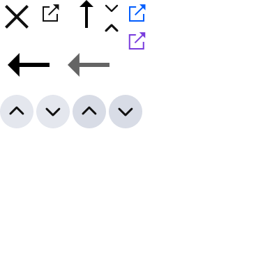

대통령이 궐위된 때 또는 대통령 당선자가 사망하거나 판결 기타의 사유로 그 자격을 상실한 때에는 60일 이내에 후임자를 선거한다. 국회가 재적의원 과반수의 찬성으로 계엄의 해제를 요구한 때에는 대통령은 이를 해제하여야 한다. 국회가 재적의원 과반수의 찬성으로 계엄의 해제를 요구한 때에는 대통령은 이를 해제하여야 한다.국회가 재적의원 과반수의 찬성으로 계엄의 해제를 요구한 때에는 대통령은 이를 해제하여야 한다. 대통령은 국회에 출석하여 발언하거나 서한으로 의견을 표시할 수 있다. 국가는 전통문화의 계승·발전과 민족문화의 창달에 노력하여야 한다. 대통령이 제1항의 기간내에 공포나 재의의 요구를 하지 아니한 때에도 그 법률안은 법률로서 확정된다.